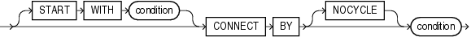

Oracle
Наконец-то мы добрались до Oracle! Об этой СУБД я хотел бы рассказать поподробнее. В Oracle иерархические запросы появились в 8-ой версии, задолго до появления стандарта. Поэтому до сих пор используется совсем другой синтаксис. Лично мне он кажется более понятным и напоминающим обычные функциональные языки. Хотя, скорее всего, это дело привычки. Описание синтаксиса в документации напоминает бусы: на единую нить запроса нанизываются нужные операторы. Никому не приходило в голову сделать украшение для гички?  Тут видно, что единственно важное условие для построения иерархического запроса – это оператор CONNECT BY, остальное “нанизывается” по мере надобности. Необязательный оператор START WITH говорит Ораклу с чего начинать цикл, т.е. какая строка (или строки) будет корневой. Условие может быть практически любым, можно даже использовать функции или внутренние запросы: pid is null, или id = 1, или даже substr(title, 1, 1) = ‘Р’. Условие после CONNECT BY нужно указать обязательно. Тут надо сказать Ораклу, как долго продолжать цикл. Что-то в духе while в обычных языках программирования. Например, мы можем попросить достать нам 10 строк: rownum<=10 – он и нафигачит нам в цикле ровно 10 одинаковых строк. Почему одинаковых? Да потому что мы указали какую строку выбрать первой, а как найти следующую нет – вот он и выдает 1-ую строку нужное количество раз. Кстати сказать, rownum это псевдостолбец, в котором нумеруются строки, начиная от 1 в порядке их выдачи. Его можно использовать не только в иерархических запросах. Но это уже другая история. Как же получить нормальную иерархию? Нужно использовать специальный оператор, который называется PRIOR. Это обычный унарный оператор, точно такой же как + или -. “Позвоните родителям” – говорит он, заставляя Оракл обратиться к предыдущей записи. С его помощью можно написать правило pid = PRIOR id (или PRIOR id = pid, как говорится, от перестановки мест…). Что получается? Оракл находит первую запись, удовлетворяющую условию в START WITH, и принимается искать следующую. При этом к той первой записи можно обратиться через PRIOR. Если мы все сделали правильно, то Оракл будет искать записи, в которых в поле для хранения информации о родителе (pid) будет содержаться значение, равное идентификатору id нашей первой записи. Таким образом будут найдены все потомки корневой записи. А так как процесс рекурсивный, аналогичный поиск будет продолжаться с каждой найденной строкой, пока не отыщутся все потомки. Теперь у нас есть все необходимое, чтобы написать иерархический запрос в Oracle. Но прежде чем мы его напишем, расскажу еще об одной штуке. Порядок строк это хорошо, но нам было бы трудно понять, две строки рядом это родитель и его потомок или два брата-потомка одного родителя. Пришлось бы сверять id и pid. К счастью, Oracle предлагает в помощь дополнительный псевдостолбец LEVEL. Как легко догадаться, в нем записывается уровень записи по отношению к корневой. Так, 1-ая запись будет иметь уровень 1, ее потомки уровень 2, потомки потомков — 3 и т.д.
SELECT level, id, pid, title
FROM test_table
START WITH pid is null
CONNECT BY PRIOR id = pid;
LEVEL ID PID TITLE
------ ---------- ---------- -------------------
1 1 Россия
2 2 1 Воронеж
3 3 2 ООО "Рога и копыта"
4 6 3 Главный офис
4 7 3 Офис 1
4 8 3 Офис 2
5 9 8 Сервер 1
2 4 1 Москва
2 5 1 Лиски
3 10 5 ЛискиПресс
Неплохо. Все дочерние строки оказываются под своими родителями. Сортировку бы еще добавить, чтобы записи одного уровня выводились не абы-как, а по алфавиту. Ну чтож, сортировка это просто: добавим в конец запроса конструкцию ORDER BY title.
SELECT level, id, pid, title
FROM test_table
START WITH pid is null
CONNECT BY PRIOR id = pid
ORDER BY title;
LEVEL ID PID TITLE
------ ---------- ---------- -------------------
2 2 1 Воронеж
4 6 3 Главный офис
2 5 1 Лиски
3 10 5 ЛискиПресс
2 4 1 Москва
3 3 2 ООО "Рога и копыта"
4 7 3 Офис 1
4 8 3 Офис 2
1 1 Россия
5 9 8 Сервер 1
О, нет! Вся иерархия поломалась. Что же получилось? Оракл честно выбрал нужные строки в порядке иерархии (об этом говорит правильная расстановка level), а затем пересортировал их согласно правилу ORDER BY. Чтобы указать Ораклу, что сортировать надо только в пределах одного уровня иерархии, нам поможет маленькая добавка в виде оператора SIBLINGS. Достаточно изменить условие сортировки на ORDER SIBLINGS BY title – и все встанет на свои места. Кстати, возможно все еще не понятно, почему этот порядок строк является деревом. Можно убрать все “лишние” поля и добавить отступы, станет более наглядно:
SELECT lpad(' ', 3*level)||title as Tree
FROM test_table
START WITH pid is null
CONNECT BY PRIOR id = pid
ORDER SIBLINGS BY title;
TREE
-----------------------------
Россия
Воронеж
ООО "Рога и копыта"
Главный офис
Офис 1
Офис 2
Сервер 1
Лиски
ЛискиПресс
Москва
Ну вот, теперь все в точности, как на картинке в самом начале статьи. Помните, файловые менеджеры обычно пишут путь к каталогу, в котором вы находитесь: /home/maovrn/documents/ и т.п.? Неплохо было бы и нам сделать так же. А сделать это можно абсолютно не напрягаясь: специалисты из Oracle все уже сделали за нас. Просто берем и используем функцию SYS_CONNECT_BY_PATH(). Она принимает два параметра через запятую: название колонки и строку с символом-разделителем. Будем не оригинальны, напишем так: SYS_CONNECT_BY_PATH(title, ‘/’). Заодно ограничим вывод, выбрав только одну строку. Для этого, как всегда, нужно добавить условие WHERE. Даже в иерархическом запросе ограничивающее условие применяется ко всем строкам. Вставить его надо до иерархической конструкции, сразу после FROM. Для примера определим путь до “Сервер 1”, который у нас записан с id=9:
SELECT SYS_CONNECT_BY_PATH(title, '/') as Path
FROM test_table
WHERE id=9
START WITH pid is null
CONNECT BY PRIOR id = pid;
PATH
----------------------------------------------------
/Россия/Воронеж/ООО "Рога и копыта"/Офис 2/Сервер 1
Еще может быть полезен псевдостолбец CONNECT_BY_ISLEAF. Его можно использовать так же, как LEVEL. В этом псевдостолбце напротив каждой строки проставляется 0 или 1. Если есть потомки – проставится 0. Если потомков нет, такой узел в дереве называется “листом”, тогда и значение в поле CONNECT_BY_ISLEAF будет равно 1. Устали? Осталось немного, самое страшное уже позади. Раньше мы использовали оператор PRIOR, который ссылался к родительской записи. Помимо него есть другой унарный оператор CONNECT_BY_ROOT, который ссылается (ни за что не догадаетесь!) на корневую запись, т.е. на самую первую в выборке.
SELECT id, pid, title, level,
CONNECT_BY_ISLEAF as IsLeaf,
PRIOR title as Parent,
CONNECT_BY_ROOT title as Root
FROM test_table
START WITH pid is null
CONNECT BY PRIOR id = pid
ORDER SIBLINGS BY title;
ID PID TITLE LEVEL LEAF PARENT ROOT
-- --- -------------------- ----- ---- -------------------- ------
1 Россия 1 0 Россия
2 1 Воронеж 2 0 Россия Россия
3 2 ООО "Рога и копыта" 3 0 Воронеж Россия
6 3 Главный офис 4 1 ООО "Рога и копыта" Россия
7 3 Офис 1 4 1 ООО "Рога и копыта" Россия
8 3 Офис 2 4 0 ООО "Рога и копыта" Россия
9 8 Сервер 1 5 1 Офис 2 Россия
5 1 Лиски 2 0 Россия Россия
10 5 ЛискиПресс 3 1 Лиски Россия
4 1 Москва 2 1 Россия Россия
Стоит отметить, что если в результате выполнения запроса обнаружится петля, Oracle выдаст ошибку. К счастью, ее можно обойти, хотя если в данных содержатся петли – это явно ошибка, в деревьях не бывает петель. На картинке с “бусами” запроса был нарисован оператор NOCYCLE после CONNECT BY – его мы и будем применять. Теперь запрос не будет вылетать. А чтобы определить “больной” участок, воспользуемся псевдостолбцом CONNECT_BY_ISCYCLE – в нем во всех хороших строках будет записано 0, а в тех, которые приводят к петлям, волшебным образом окажется 1. Чтобы проиллюстрировать это, придется немного подпортить данные. ЛискиПресс ссылается у нас на город Лиски; изменим запись Лиски, чтобы она ссылалась на ЛискиПресс (не забудьте про commit – я вечно забываю):
update test_table set pid=10 where id=5;
Если мы запустим какой-нибудь из предыдущих запросов, увидим, что и Лиски, и ЛискиПресс выпали из выборки, будто их нет совсем. Бегая в цикле, Оракл просто перестал на них натыкаться, т.к. нет пути от записи Россия к городу Лиски. Изменим условия START WITH, чтобы начинать с города Лиски – появится ошибка. Умный Оракл видит что запись уже выбиралась ранее и отказывается бегать в бесконечном цикле. Исправляем ошибку:
SELECT CONNECT_BY_ISCYCLE as cycl, id, pid, title
FROM test_table
START WITH id=5
CONNECT BY NOCYCLE PRIOR id = pid;
CYCL ID PID TITLE
---- ---------- ---------- ----------
0 5 10 Лиски
1 10 5 ЛискиПресс
Практические примеры
Иерархические запросы можно применять не только там, где есть явная иерархия. Например, рассмотрим задачу получения списка пропущенных номеров из последовательности. Это бывает нужно, когда в некоей таблице id генерируется автоматически путем увеличения на 1, но часть записей были удалены. Нужно получить список удаленных номеров. По хорошей традиции, это следует сделать одним селектом. Подготовим тестовые данные. Удалим из нашей таблицы пару записей:
DELETE FROM test_table WHERE id IN (3, 5);
С чего начнем? Во-первых, неплохо было бы получить список номеров подряд от 1 до максимального значения в нашей таблице, чтобы было с чем сравнивать. Выяснить максимальное значение id из таблицы, думаю, не составит никаких трудностей:
SELECT max(id) FROM test_table
А вот чтобы сгенерировать последовательность от 1 до max как раз и понадобится рекурсивный запрос. Ведь как здорово просто взять и получить нужное количество строк! Достаточно будет их пронумеровать – и вот список готов.
SELECT rownum as rn FROM dual
CONNECT BY level <= (SELECT max(id) FROM test_table);
Конструкция “SELECT … FROM dual” используется, когда надо вычислить значение функции, не производя при этом выборки данных. Dual – это системная таблица, состоящая из одного столбца и одной строки. Запрос из нее всегда возвращает одну строку со значением ‘X’. Благодаря такой умопомрачительной стабильности, эту таблицу удобно использовать в качестве источника строк. Обычно таблицу, которую нагло используют для получения нужного количества строк, не выбирая сами данные, называют pivot. В качестве такой таблицы может выступать любая большая таблица, в том числе системная. Но использование dual в Oracle является более разумным решением. Теперь, когда список номеров подряд уже есть, достаточно пройтись по нему и сравнить, есть ли такой номер в проверяемой таблице:
SELECT sq.rn
FROM (SELECT rownum as rn FROM dual
CONNECT BY level <= (SELECT max(id) FROM test_table)) sq
WHERE sq.rn not in (SELECT id FROM test_table)
ORDER BY rn;
RN
----
3
5